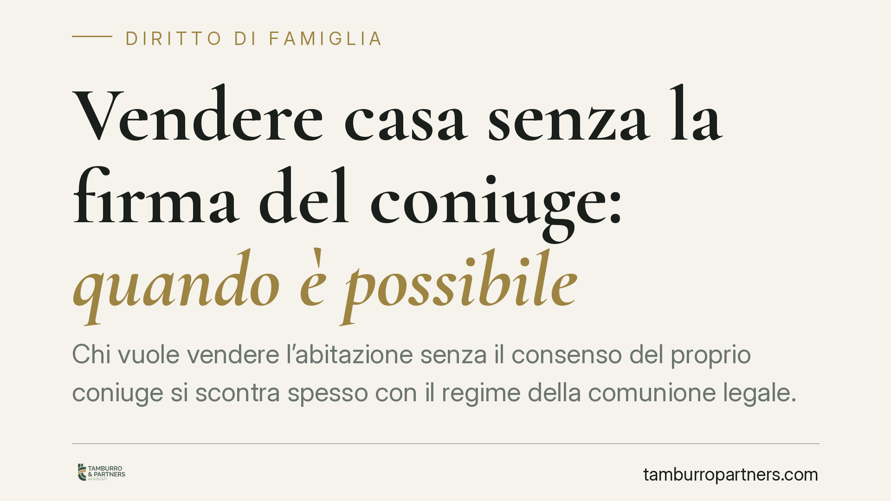

Vendere casa senza la firma del coniuge: quando è possibile
Chi vuole vendere l'abitazione senza il consenso del proprio coniuge si scontra spesso con il regime della comunione legale. La firma di uno solo può rendere l'atto annullabile, con conseguenze pesanti anche per chi acquista. Vediamo quando serve davvero il consenso di entrambi e quando, invece, un coniuge può disporre da solo.

Il nodo: chi è il proprietario della casa
La domanda «posso vendere casa senza la firma di mio marito o mia moglie?» non ha una risposta unica. Tutto dipende dal regime patrimoniale dei coniugi e dal momento in cui l'immobile è stato acquistato.
In assenza di scelte diverse, il matrimonio comporta il regime della comunione legale dei beni (art. 177 c.c.). Ciò significa che gli acquisti compiuti durante il matrimonio entrano, di norma, nel patrimonio comune, a prescindere da chi abbia materialmente pagato il prezzo. Anche se un solo coniuge ha versato l'intera somma, la giurisprudenza è costante: la proprietà resta divisa al 50%.
Inquadramento normativo
L'art. 177, lett. a), c.c. include nella comunione «gli acquisti compiuti dai due coniugi insieme o separatamente durante il matrimonio». Restano invece esclusi i cosiddetti beni personali elencati dall'art. 179 c.c.: tra questi, i beni acquistati prima del matrimonio, quelli ricevuti per donazione o successione e quelli acquistati con il prezzo del trasferimento di beni personali, purché ciò risulti espressamente dall'atto.
Per gli immobili in comunione, l'art. 180 c.c. impone che gli atti di straordinaria amministrazione — la vendita lo è — siano compiuti congiuntamente da entrambi i coniugi. L'art. 184 c.c. stabilisce la sanzione: l'atto compiuto da un solo coniuge senza il necessario consenso è annullabile, su domanda dell'altro coniuge entro un anno da quando ne ha avuto conoscenza (o comunque dalla trascrizione).
All'atto dello scioglimento della comunione — ad esempio in caso di separazione o divorzio — trovano applicazione gli artt. 191 e 192 c.c., che regolano la divisione e i rimborsi tra i coniugi.
Quando si può vendere da soli
Un coniuge può disporre dell'immobile senza la firma dell'altro in alcune ipotesi ben definite:
- Separazione dei beni: se i coniugi hanno scelto questo regime, ciascuno resta titolare esclusivo di ciò che acquista e vende liberamente i propri beni.
- Bene personale ex art. 179 c.c.: se l'immobile è stato acquistato prima del matrimonio o rientra nelle categorie escluse dalla comunione, appartiene a un solo coniuge.
- Quota indivisa: in comunione, il singolo coniuge può cedere la propria quota del 50%, ma non l'intero bene senza il consenso dell'altro.
Attenzione, però: la sola dichiarazione nell'atto che il denaro proveniva da fondi personali non basta a escludere il bene dalla comunione. Serve la partecipazione dell'altro coniuge all'atto o una prova rigorosa della natura personale della provvista.
Implicazioni pratiche per l'acquirente
Chi compra corre un rischio concreto. Se acquista da un solo coniuge un bene in comunione, l'atto è esposto all'azione di annullamento dell'altro coniuge. In quel caso l'acquirente può perdere la titolarità del bene e trovarsi a dover recuperare il prezzo dal venditore, con tutte le difficoltà del caso.
Un secondo scenario riguarda il preliminare firmato da un solo coniuge. Se poi l'altro non presta il consenso, il promissario acquirente può tentare l'esecuzione in forma specifica ex art. 2932 c.c. (la sentenza che tiene luogo del contratto non concluso), ma solo se sussistono i presupposti: il giudice non può trasferire ciò che il promittente non poteva vendere da solo.
Cosa fare in concreto
- Verifica il regime patrimoniale con estratto per riassunto dell'atto di matrimonio o visura anagrafica prima di firmare qualsiasi impegno.
- Controlla la provenienza dell'immobile: data di acquisto, eventuale donazione o successione, dichiarazioni rese nell'atto originario.
- Richiedi il consenso scritto di entrambi i coniugi già nel contratto preliminare, non solo nel rogito.
- Se acquisti, pretendi la partecipazione all'atto di entrambi o una rinuncia formale del coniuge non intestatario.
- In caso di dubbio, consigliamo di far esaminare la situazione da un professionista prima della firma: annullare le conseguenze di un atto sbagliato è molto più oneroso che prevenirle.
La disciplina della comunione legale tutela entrambi i coniugi, ma proprio per questo impone attenzione a chi vende e, soprattutto, a chi acquista.
---
*Contributo informativo a cura di Tamburro & Partners - Avv. Giuseppe Tamburro. Non costituisce parere legale.*
Ogni famiglia ha il suo equilibrio.
Separazione, divorzio, affidamento, assegno: se vuoi un confronto riservato su una specifica situazione, scrivi allo studio. Ti rispondiamo entro un giorno lavorativo.